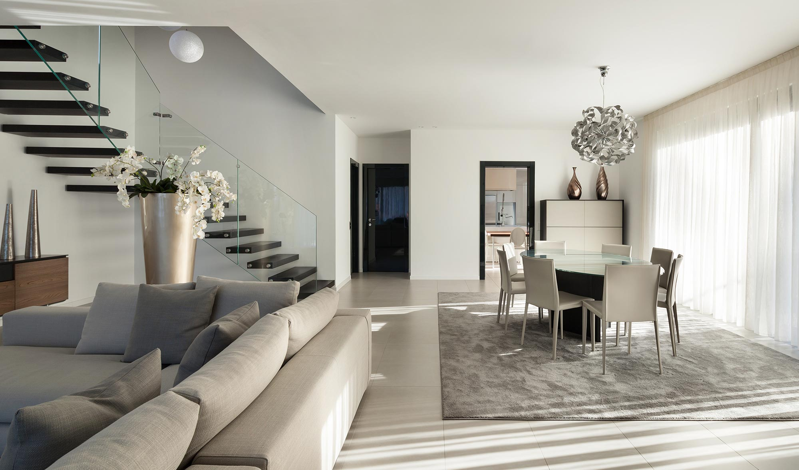
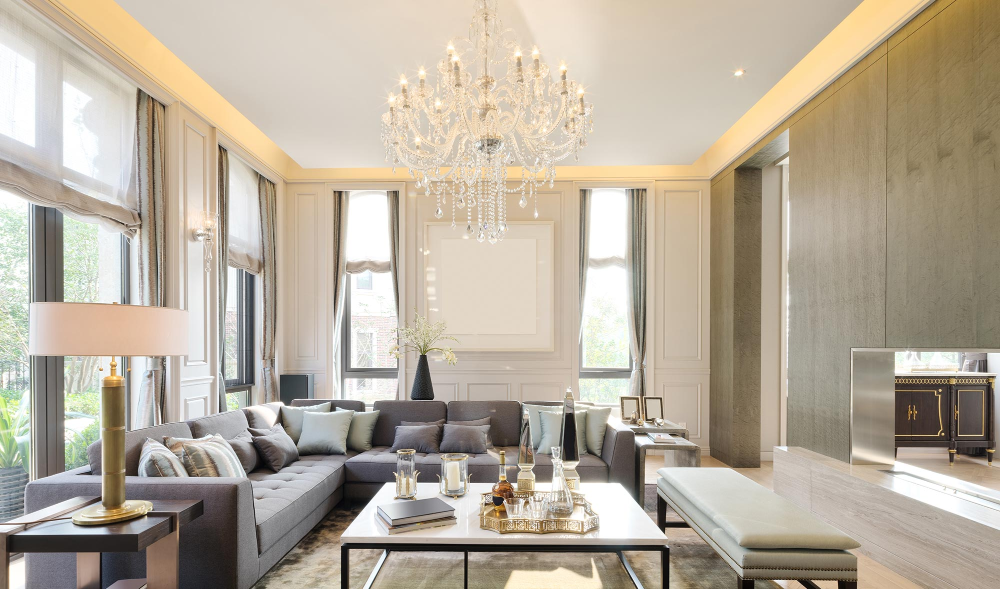
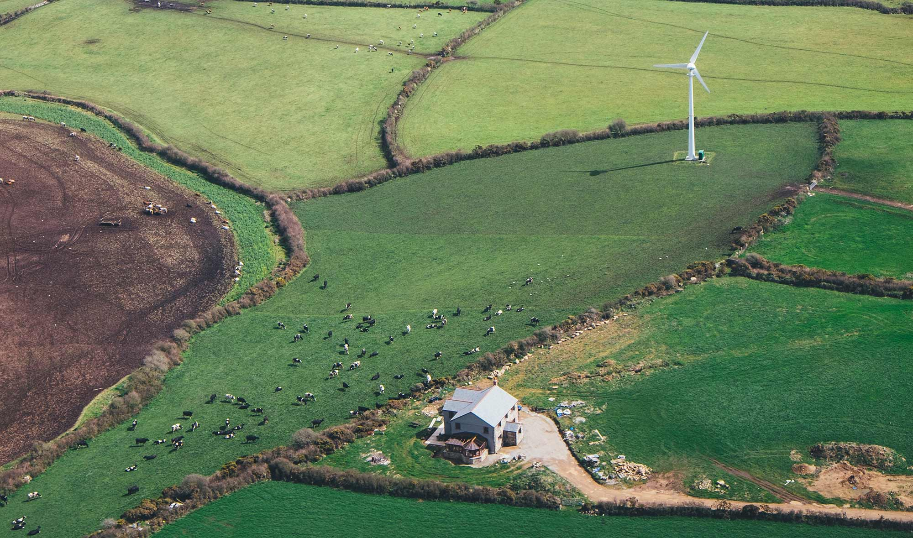

Дома, которые трогают Вас
В PD-project мы стремимся создавать эксклюзивные элитные комплексы, от сделанных на заказ пентхаусов до тщательно продуманных жилых домов в престижных районах Оксфордшира. Благодаря тщательному планированию каждый дом построен в соответствии с высочайшими требованиями, максимально используя пространство и свет, чтобы предложить действительно изысканный образ жизни. Мы понимаем важность отличия благодаря дизайну, сочетающему в себе современные функции для самого взыскательного покупателя дома.
PD-project, основана на 25-летнем наследии знаний и опыта, была основана с целью создания вдохновляющих мест для жизни. Мы стремимся к тому, чтобы нас считали исключительными, и мы стремимся обеспечить превосходство во всем нашем бренде, от дизайна до сборки, с безупречным вниманием к деталям.
Наша философия заключается в том, чтобы постоянно совершенствоваться, находя решения с помощью дизайна. Наши ценности качества, долговечности и идеализма составляют основу нашего бренда и влияют на каждое решение, которое мы принимаем как бизнес. Мы предлагаем дома исключительного качества с инновационным дизайном, включающие в себя высоту потолков выше среднего, просторные комнаты, в которых нет места для хранения вещей, и жилые помещения открытой планировки с высококачественной отделкой. В Pandora Homes мы стремимся уменьшить выбросы углекислого газа в окружающую среду и сделать наши дома энергоэффективными. Это достигается за счет работы с ведущими отраслевыми поставщиками, из которых мы можем получить высококачественные экологически чистые материалы.
Заявка на планирование роскошных новых домов, из которых открывается изысканный панорамный вид на Солнечный Остров.
Несмотря на сложную среду планирования, наш опыт и квалифицированный подход к приобретению земли позволяют нам сотрудничать с местными советами, чтобы максимизировать стоимость земли без ущерба для прилегающих территорий.
PD-project находится в Краснодаре, и мы активно ищем возможность приобрести землю в графстве и вокруг него для застройки.
Мы активно ищем участки, которые имеют потенциал для развития, как с согласия планирования, так и без него. У нас есть опытные деловые партнеры, которые являются частью PD-project. Они имеют многолетний опыт между ними и специализируются на покупке земельных участков. В результате мы можем консультировать или сотрудничать с владельцами, которые стремятся максимизировать стоимость своего участка в совместном предприятии, или мы можем просто купить ваш участок сразу.